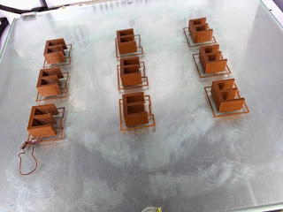
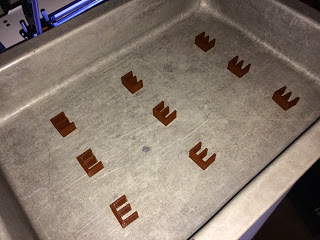
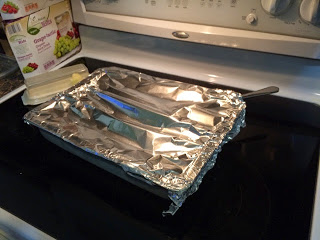

Alexa Dot Holder
Sun 16 September 2018 by Dr. Dirk Colbry
My brother got me an Alexa Dot for Christmas a few years ago. It turns out to be a lot of fun. We put it in the kitchen and the kids play music. My wife and I also use it to add things to our shopping list (very convenient!) Anyway, I like to explore Thingaverse.com by tying in the names of gadgets I have to see what kinds of modifications you can find. When I typed in Alexa dot I came across this really cool plug holder which would get it off my kitchen counter.
https://www.thingiverse.com/thing:2300667
The design is by Cpt Skippy and I am really pleased with how it turned out.
I may post a new picture when I get a smaller USB cable that doesn't need to wrap around so much.
3D printed Switch Guard

We recently moved into a new house and the kids are having fun running around turning on and off all the lights. Unfortunately, some of the light switches are not for lights. One goes to our garbage disposal, another goes to the gas fireplace and another turns off the furnace …
read moreMigration from Blogger to Pelican
Today I was showning someone my old Blogger website and one of the reasons I moved away from blogger is that it was hard to edit and did not work well with my workflow. It occured to me that it may be easy to migrate from Blogger to my new Pelican Blog.
read moreFarmBot
JJRobotics
CNC Mill Picking
I am interested in purchasing a CNC machine for the shop space in our new house. I think I would like to stick to something around $1000 but would be willing to invest as much as $2000 if I can find the right machine. There are a lot of choices …
read moreIntrducing a 3D printer to my daughter's Kindergarten class
We had fun showing off my 3D printer to the Kindergarten class. Although the printer is fun to watch, kids tend to get board with it in just a few minutes. I like to come up with classroom projects that let the kids use things that are printed with the …
read moreElectric box extender
I have been having trouble with my 3D printer over the last couple of months. It turns out that the fans got disconnected. Once I fixed the problem my printer is working better than ever. I was itching for something to print so I came up with this simple spacer …
read moreUltimaker 2, cleaning a clogged nozzle
So my Ultimaker2 extruding head got clogged, really bad. Something got jammed while printing and I could not get the filament to feed. This had happened once in the past when I tried using some really cheap filament but I am not sure the real root of the problem this …
read moreApril 1st Brownies
An oldie but a goodie with a modern twist. This year I printed out the letter E on my 3D printer using Brown PLA plastic.

Then I put the Brown E's in a baking pan:

Cover with aluminum foil and tell the kids I made brownies for them.

The were …
read more